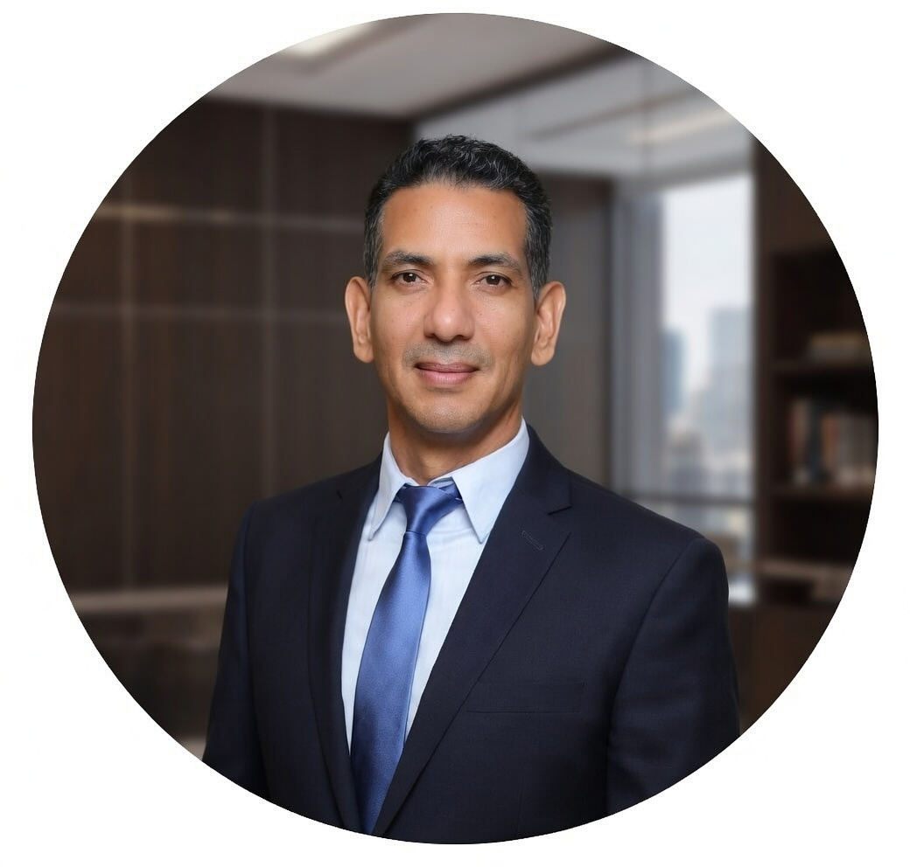

Twenty years in healthcare technology. Today I support enterprise IT across one of the largest health systems in South Florida — and I'm earning my way into cloud architecture the hands-on way: labs, builds, and certifications, in that order.
I'm an IT Technology Support Analyst at Memorial Healthcare System, where I troubleshoot and support the systems and devices clinicians and staff rely on across 10 hospitals and 95 remote locations — domain PCs and laptops, docking stations, printers and label printers, Microsoft 365, software deployment through SCCM and Company Portal, and re-imaging with the enterprise image.
Before Memorial, I spent 17 years at Baptist Health South Florida, working my way from Lead Biomedical Equipment Technician to IT Helpdesk Technician 3. That path — devices, then support, then enterprise systems — is why I approach cloud the way I do: from the user and the workload outward, not from the diagram down.
Where I'm headed: Cloud Solutions Architect. I'm completing Microsoft's AZ-104 (Azure Administrator) now, then AZ-305 (Azure Solutions Architect Expert), while enrolled in the Go Cloud Careers cloud architect program. I learn by doing — every lab in my portfolio was built, broken, fixed, and documented by me.
Enterprise IT support across 10 major hospitals and 95 remote locations (medical centers, physician practices, freestanding emergency rooms). First-line and on-site troubleshooting for domain workstations, Dell Wyse thin clients, docking stations, Zebra and wireless label printers, and Microsoft 365. Software installation and licensing, application pushes via SCCM and Company Portal, machine re-imaging with the domain image, and escalation-ready documentation — in a HIPAA-regulated environment where downtime is a patient-care issue, not an inconvenience.
Senior helpdesk support for a large hospital system: hardware and software troubleshooting, account and access issues, and dependable first-call resolution for clinical and administrative staff.
Led biomedical equipment support — maintenance, repair, and safety verification of the medical devices patient care depends on. The foundation of my troubleshooting discipline: diagnose from evidence, document everything, never guess with safety on the line.
40 self-built Azure labs covering virtual networking, identity (Microsoft Entra ID), storage, Azure App Service, Azure Kubernetes Service (AKS), and infrastructure as code with Bicep and ARM templates — each with verification steps and a plain-English explanation of the business problem it solves. I record tutorial videos as I learn, building a portfolio that shows the work, not just the claim.
A mobile knowledge-base app I designed and built (React Native + Expo, TypeScript, offline-first) to carry my own troubleshooting procedures: searchable articles, guided step-by-step fix flows, favorites, and backup/restore. Running on my phone and used in my daily support work.
A React Native + Expo app I built to stop losing reimbursable miles driving between the 105 Memorial locations I support. GPS trip tracking is anchored to a saved directory of employer sites — the trip's From/To addresses come from the site record, never guessed from GPS — with trip times, one-tap return trips, and an Excel export in my employer's exact reimbursement format. All data stays on the phone: no cloud, no account.
A local Python system where specialized agents — technical analysis, news sentiment, bull/bear cases, a portfolio manager, and a risk manager with veto power — make paper-trading decisions against live market data (Alpaca paper account). Running a 60–90 trading-day evaluation benchmarked against the S&P 500, with a real-time dashboard. Paper only — it earns the right to be trusted, or it doesn't.
A Python bot that scores 11 cryptocurrencies every 5 minutes — RSI, VWAP, EMA trend, volume, and momentum combined into one 0–100 score — and scalps small, fast moves on Kraken under hard guardrails: $10 per trade, max 3 open positions, a $50 total budget cap, and a $10 daily-loss stop. It runs live on a small real-money test budget with a real-time dashboard, through an API key that can trade but can never withdraw funds.
I wrote, designed, and published a 13-guide line of practical PDF guides (Florida boating, hunting, boat buying, and everyday-life topics) and run the online store end to end — product, pricing, and marketing included.
Certifications held: CompTIA Security+ · CompTIA Cloud+
In progress: Microsoft AZ-104 (Azure Administrator) → AZ-305 (Azure Solutions Architect Expert). Enrolled in the Go Cloud Careers cloud architect program.
Education: Broward College — B.A.S., Information Technology; Advanced Certification in Cybersecurity & Ethical Hacking. Florida International University, College of Engineering & Computing (coursework).
Find me on GitHub and LinkedIn. I'm completing AZ-104 and AZ-305 before my move into cloud architecture roles — follow the lab portfolio if you want to see the work behind the title.